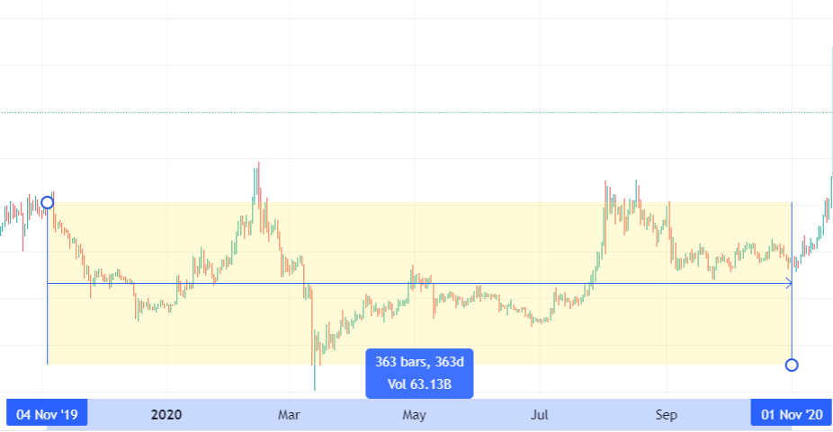
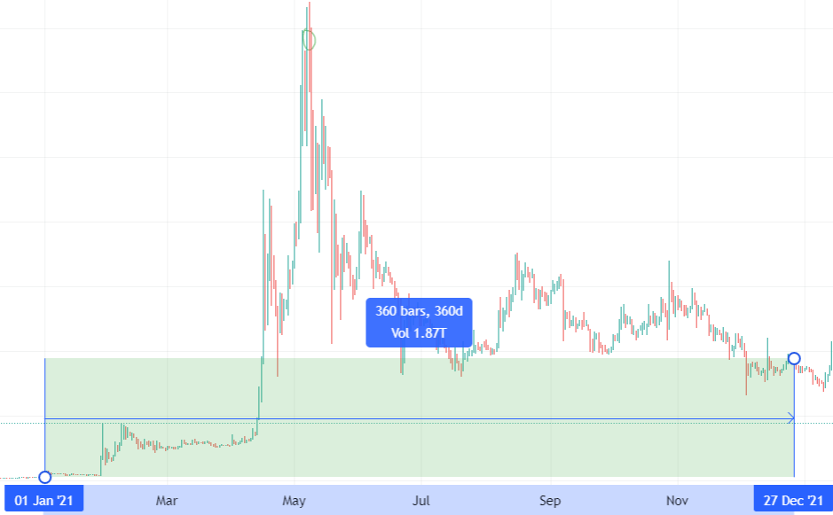

Beaucoup de chemins mènent à la réussite,
mais un seul mène immanquablement à l'échec, c'est celui de ne
pas essayer.
Avec internet il n'a jamais été aussi simple d'atteindre la liberté financière, l'opportunité que nous offre internet
aujourd’hui: c’est les cryptos ! D’ici 2025, il y aura plus d’un milliard de personnes qui utiliseront les cryptos.

On ne s'en rend pas compte mais l'adoption de la cryptomonnaie au grand
publique avance à une vitesse hallucinante. Encore plus rapidement que l'adoption d'Internet!.
Mais le problème c'est que même avec cette grande opportunité il y aura des perdants ! En effet, et si vous investissez sur
la mauvaise crypto? Une crypto qui va s'écrouler avec le temps, ou alors vous investissez sur la bonne crypto mais vous l'avez pris
à un top du marché ? En quelque jours/semaines vous verrez votre capital s'effondrer brusquement.
Que faut-il faire alors pour faire partie du camp des gagnants ? Du holding ? Du trading ?
Eh bien presque, le holding et le trading c'est bien, mais les deux c'est mieux!
Par là, il ne faut pas comprendre qu'on va Holder et trader en même temps,
mais plutôt utiliser un robot. C'est le bot MAK2,
qui va nous permettre d'avoir à la fois
-la tranquillité d'un holder
-le temps libre d'un Holder
-et la maîtrise de son capital d'un Trader.

Vous vous dites sûrement que c'est trop beau pour être vrai ? Et bien regardons ensemble quelques backtest du robot.
Pour plus de pertinence, nous allons observer le comportement du bot MAK2 en
période de baisse, range, et période de hausse sur environ 1 ans.
En période de baisse.
Sur L'Ethereum Du 8 janvier 2018 au 7 décembre 2018.
Prenons une personne A et une personne B,
la personne A achete 1000$ d'Ethereum le 8 Janvier 2018 et utilise le BOT MAK2 qui va gérer ses Ethereum automatiquement.
la personne B achete 1000$ d'Ethereum le 8 Janvier 2018 et ne touche plus à ses Ethereum , elle fait donc du Holding.
Observons ce qu'il s'est passé sur leurs portefeuille au bout d'1 ans.
(à la baisse)
Lors de cette chute de l'Eth entre le 8 janvier 2018 au 7 décembre 2018
le portefeuille du holder(personne b) est passé de
1000$ à 82$, une perte
de 918$! pas étonnant vu que le holder est directement lié au marché.
De l'autre le bot Mak2 (personne a) est passé de 1000$ à 1189$!
Ça s'explique par le fait que le robot à absorbé les hausses et a
su atténuer les baisses.
En période de range.
Sur L'XRP Du 4 novembre 2019 au 4 novembre 2020.

la personne A achète 1000$ d'XRP le 4 novembre 2019.
la personne B achète 1000$ d'XRP le 4 novembre 2019.
Observons ce qu'il s'est passé pendant 1 an sur le portefeuille.
(en range)
Le bot Mak2 est passé de 1000$ à 1144$.
l'holdeur est passé de 1000$ à 802$.
Lors de ce range on constate que le bot Mak2 est plus stable que l'holding, le portefeuille est
tombé à maximum893$ contre 494$ pour le holder.
En période de hausse
Sur Le Doge Du 1 janvier 2021 au 27 décembre 2021.

1000$ de Doge pour le bot Mak2 le 1 janvier 2021.
1000$ de Doge pour le holding le 1 janvier 2021..
Observons ce qu'il s'est passé pendant 1 ans sur le portefeuille.
(à la hausse)
Le bot Mak2 est passé de 1000$ à 434328$.
L'holdeur est passé de 1000$ à 33415$.
Lors de cette hausse on constate que le bot Mak2 en plus d'avoir absorbé énormément la hausse
du marché, il a su garder les gains même après la chute du doge.